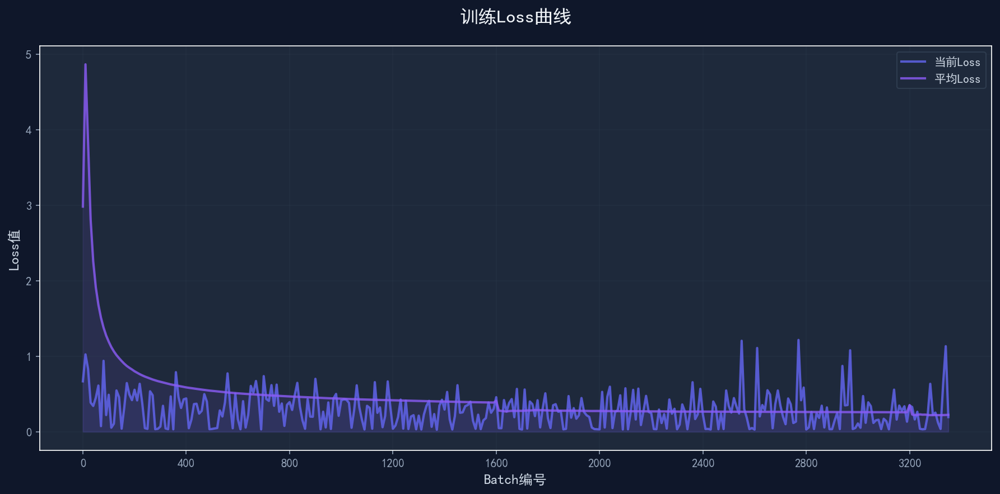
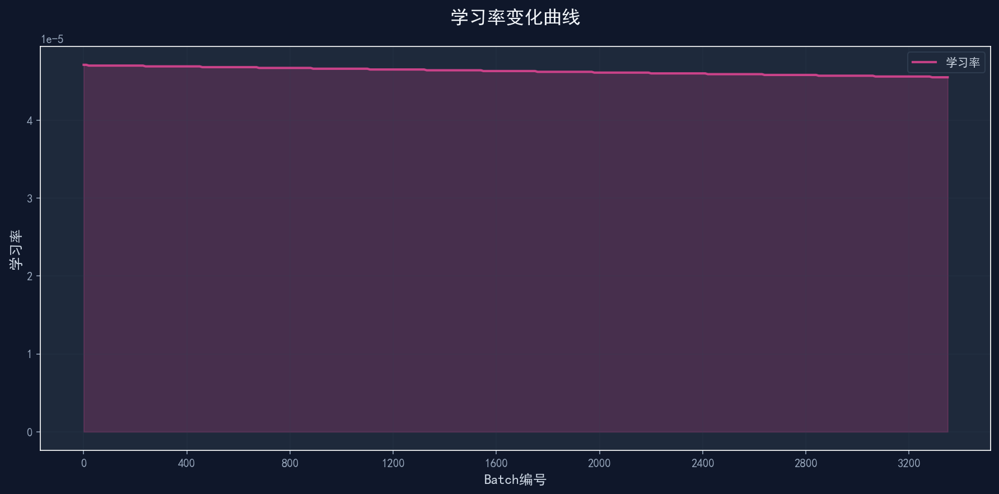
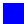
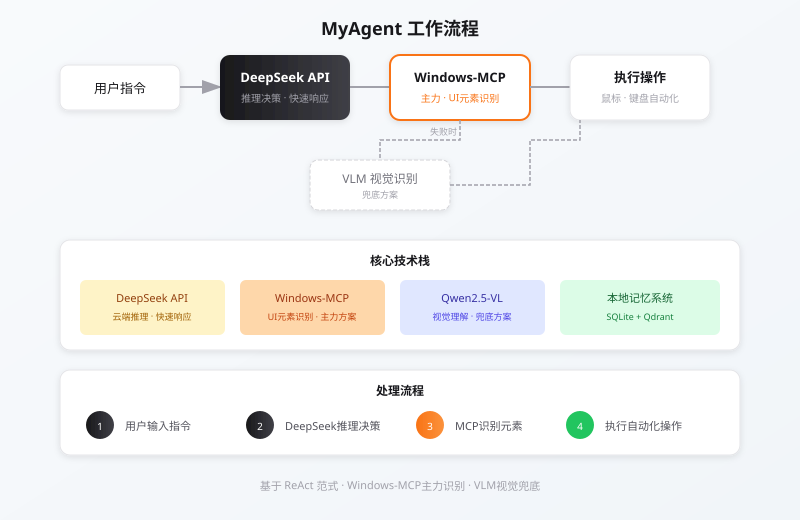
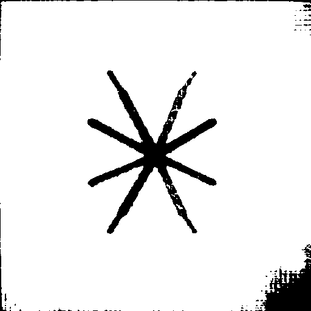
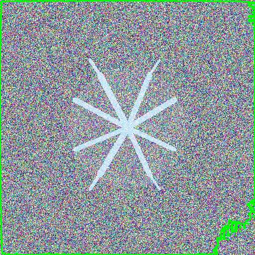
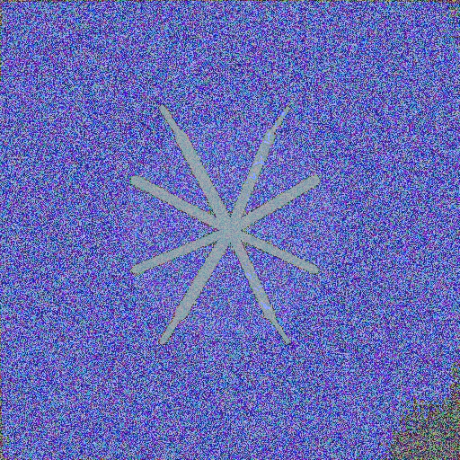
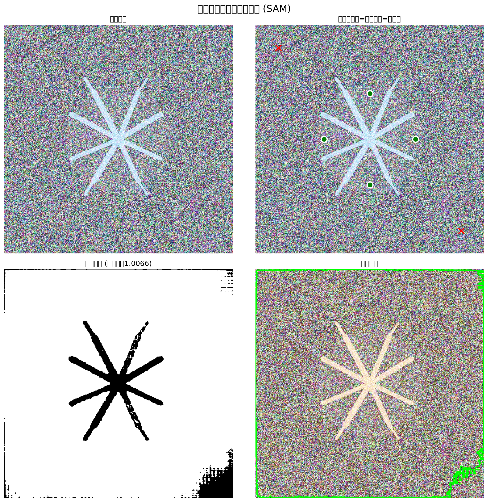

矢量几何图形工具开发
项目背景
这是一个专业的矢量图形编辑工具项目，旨在为图像分割提供专业级交互工具，同时为图文编辑软件建立基础功能。项目使用Qt/QML框架开发，重点实现了一套完整的图形编辑架构。
项目用途
为图像分割标注工具提供专业级的矢量图形交互能力，同时为后续图文编辑软件开发奠定基础。通过这个项目深入理解了专业图形软件的架构设计和技术实现。
核心架构
- ZoomableView — 视图交互架构，实现缩放、平移、自适应
- GraphicsTool — 工具交互架构，支持矩形、椭圆、多边形等
- GridSnap/ObjectSnap — 对齐架构，精确位置控制
- Undo/Redo — 基于QUndoGroup的撤销重做服务
- Path编辑 — 复刻Figma操作，节点选择与控制
核心算法
- Bezier分割 — de Casteljau算法曲线分割
- B样条拟合 — 三次样条曲线插值生成
- 曲线平滑 — 控制点对称化处理
项目架构
class ZoomableView : public QQuickPaintedItem {
Q_PROPERTY(qreal zoomFactor READ zoomFactor WRITE setZoomFactor)
Q_PROPERTY(QRectF contentRect READ contentRect WRITE setContentRect)
Q_PROPERTY(qreal minZoomFactor READ minZoomFactor WRITE setMinZoomFactor)
Q_PROPERTY(qreal maxZoomFactor READ maxZoomFactor WRITE setMaxZoomFactor)
// 视图变换
void zoom(qreal scale, qreal cx, qreal cy);
void zoomFit(const QRectF &bounds);
void zoomIn();
void zoomOut();
void fitToWidth();
void fitToContent();
// 坐标映射
QPointF mapFromContent(const QPointF &point);
QPointF mapToContent(const QPointF &point);
QRectF mapRectFromContent(const QRectF &rect);
QRectF mapRectToContent(const QRectF &rect);
};class GraphicsTool : public Tool {
// 图形工具基类
void paint(QPainter *painter) override;
};
class RectangleTool : public GraphicsTool {
// 矩形工具
void createPath(QPainterPath &path, const QRectF &rect);
};
class EllipseTool : public RectangleTool { /* 椭圆 */ };
class PolygonTool : public RectangleTool { /* 多边形 */ };
class StarTool : public RectangleTool { /* 星形 */ };
class PenTool : public PathTool { /* 钢笔工具 - 贝塞尔 */ };
class PencilTool : public PathTool { /* 铅笔工具 - 自由绘制 */ };
class SplineTool : public PathTool { /* 样条工具 - B样条 */ };void Bezier::splitAt(qreal t, Bezier *left, Bezier *right) const {
// de Casteljau 算法实现曲线分割
left->x1 = x1;
left->x2 = x1 + t * (x2 - x1);
left->x3 = x2 + t * (x3 - x2);
right->x3 = x3 + t * (x4 - x3);
right->x4 = x4;
right->x2 = left->x3 + t * (right->x3 - left->x3);
left->x3 = left->x2 + t * (left->x3 - left->x2);
// 中间连接点
left->x4 = right->x1 = left->x3 + t * (right->x2 - left->x3);
}
QPointF Bezier::pointAt(qreal t) const {
qreal a, b, c, d;
coefficients(t, a, b, c, d);
return QPointF(a*x1 + b*x2 + c*x3 + d*x4,
a*y1 + b*y2 + c*y3 + d*y4);
}class SplineCurve2D : public SplineCurve {
// 点集插值生成B样条
bool interpolate(const double *points, int count,
int flag = Open, // Open/Closed/Periodic
int parametrization = Chord, // 弦长参数化
int order = Cubic); // 三次样条
// 转换为Bezier序列便于渲染
bool convertToBeziers();
};
void SplineToolPrivate::updatePath() {
SplineCurve2D curve;
curve.interpolate(&samples[0].rx(), count,
closedFlag, SplineCurve::Chord);
curve.convertToBeziers();
}class OrthoSnapper {
// 添加对齐目标
void addTarget(const QPointF &point);
void addTarget(const QRectF &rect);
// 执行吸附
void snapPoint(const QPointF &p);
void snapRect(const QRectF &r);
// 获取结果
bool hasX() const;
qreal deltaX() const;
qreal targetX() const;
};
// 使用示例
OrthoSnapper snapper(5.0);
snapper.addTarget(otherRect);
snapper.snapPoint(currentPos);
if (snapper.hasX()) { /* 绘制对齐线 */ }功能演示
钢笔工具
贝塞尔曲线编辑

B样条曲线
点集插值生成平滑曲线

画笔拟合
自由绘制自动拟合

几何图形
参数化图形绘制

变换工具
矩阵变换与圆角

撤销重做
命令模式操作历史

中国象棋游戏开发— Java课程满分Project
项目背景
这是学校的课程项目，要求使用Java开发一个完整的游戏系统。项目需要实现完整的象棋规则、网络对战功能以及基本的AI算法。最终该项目获得满分评价。
主要学习内容
- 实现完整的象棋规则和基本AI算法
- 实现客户端-服务器架构的设计
- 实现网络编程和Socket通信
- 实现JavaFX界面开发和基础UI设计
- 实现游戏记录和回放功能
- 实现基础的AI算法
项目总结
这个项目让我对Java开发有了更全面的认识，特别是在网络编程和游戏逻辑实现方面。通过实现象棋规则和网络对战功能，我理解了如何将理论知识应用到实际项目中。虽然AI算法还比较简单，但这个过程让我对算法设计有了初步的了解。
演示视频


ASC26超算竞赛
竞赛背景
ASC世界大学生超级计算机竞赛（ASC Student Supercomputer Challenge）是全球规模最大的超算竞赛。第13届ASC26竞赛吸引了全球数百支高校队伍参加，初赛阶段要求参赛队伍完成AI与HPC集群设计、基准测试优化、具身智能世界模型优化以及数值相对论代码优化等挑战。
参赛收获
通过参与ASC26初赛，深入了解了高性能计算集群的设计原理、GPU并行优化技术，以及科学计算领域的前沿应用。特别是第四题的双黑洞合并模拟，让我接触到了引力波探测和数值相对论这一物理学前沿领域。
第四题：数值相对论代码AMSS-NCKU优化
本题目要求优化开源数值相对论代码AMSS-NCKU，模拟双黑洞合并过程并生成引力波波形。
问题描述
广义相对论是描述引力的基础理论，其控制方程——爱因斯坦场方程是物理学中最具挑战性的偏微分方程系统之一。2015年LIGO首次探测到引力波（GW150914），开启了引力波天文学时代。为了分析引力波探测数据，需要获得爱因斯坦场方程的精确数值解。
AMSS-NCKU是一款开源数值相对论代码，采用有限差分法求解爱因斯坦场方程，使用自适应网格细化（AMR）技术处理多尺度问题，并通过MPI并行化实现分布式计算。代码分为两个阶段：首先求解椭圆型方程生成初始数据，然后求解双曲型方程进行时空演化。
优化目标
- 优化双黑洞合并模拟（对应GW150914事件，质量分别为36M☉和29M☉）
- 在保持精度的前提下提升计算性能
- 双黑洞轨迹的RMS误差必须低于1%
- 约束违反值的绝对值不得超过2
技术要点
- 计算瓶颈：Runge-Kutta时间积分步骤、多网格细化层级间的数据通信与同步
- 复杂性：爱因斯坦场方程涉及数十个未知变量，时空演化的计算量占主导地位
- 并行策略：域分解 + MPI并行化
- 精度控制：使用4阶有限差分格式平衡计算成本与精度
运行结果
成功运行了双黑洞合并模拟，生成了黑洞轨迹图。模拟再现了GW150914事件中两个黑洞相互旋进、合并的动力学过程。
双黑洞轨迹模拟结果
GW150914双黑洞合并过程的空间轨迹（XY平面投影）
LaTeX编辑器开发
项目背景
在实践Qt框架和C++开发的过程中，我尝试开发一个基础的LaTeX编辑器，主要目的是实现GUI应用程序开发、文本编辑器的基本功能，以及LaTeX编译和渲染的相关技术。
主要学习内容
- 实现Qt框架的界面开发
- 实现实时LaTeX编译预览（WYSIWYG）
- 实现语法高亮和代码编辑器功能
- 实现数学公式可视化编辑
- 实现PDF导出功能
- 实现MicroTeX和YAWYSIWYGEE等渲染引擎的集成
项目总结
这个项目让我对桌面应用程序开发有了更深入的理解，特别是在处理复杂文本编辑和实时渲染方面。在开发过程中遇到了不少技术难点，通过查阅资料和不断调试，逐步解决了这些问题，这个过程让我对软件开发有了更实际的认识。
AI SVG生成模型训练
项目背景
为了实践文本到图像生成的相关技术，我尝试使用SVGX数据集训练一个基础的SVG图像生成模型。这是一个探索性的项目，主要目的是实现模型训练的基本流程和文本到图形生成的基本原理。
主要学习内容
- 实现SVGX-SFT数据集的模型微调
- 实现DeepSeek模型的基本使用
- 实现文本到SVG生成的流程
- 实现图标库数据处理（Material Design Icons、Tabler Icons）
项目总结
通过训练过程，我初步实现了模型训练的基本步骤，包括数据准备、模型配置、训练监控等。训练过程中Loss值从0.6683降低到0.3057，降低了约54%，虽然模型还比较简单，但这个过程让我对机器学习有了更直观的认识。生成的SVG图像质量还有待提升，需要进一步优化模型和参数调优。
训练过程可视化
以下展示的是训练过程中的部分数据


Text-to-SVG 生成结果
红色圆形
黄色星星
紫色爱心
蓝色矩形

绿色三角形
以上SVG图像均由AI模型根据文本描述自动生成
MyAgent - AI智能代理
项目背景
基于ReAct（推理+行动）范式构建的桌面智能代理系统。该项目整合了视觉语言模型与自动化控制工具，能够理解用户自然语言指令，自动识别屏幕元素并执行相应的操作，实现桌面自动化任务。
项目总结
通过构建完整的Agent系统，深入理解了AI Agent的工作原理。项目整合了多个技术栈，包括VLM视觉识别、ReAct决策框架、自动化控制和向量数据库等，锻炼了系统架构和集成能力。
核心模块
- ReAct框架 — 推理与行动循环的Agent架构
- 视觉理解 — Qwen2.5-VL和OmniParser屏幕元素识别
- 计算机控制 — Windows-MCP + DeepSeek API快速决策
- 本地记忆 — SQLite和Qdrant混合记忆系统
- 模型部署 — OpenVINO模型量化和推理加速
系统架构

正在进行的项目
学习方向
在完成了基础项目实践后，我计划深入学习计算机视觉和机器学习的核心领域，将理论知识与实际应用相结合，逐步建立系统的技术能力。
下一阶段目标
- 图像分割研究 — 已部署SAM和MMSegmentation，准备展开对图像分割领域的研究，学习实例分割、语义分割等核心技术
- 医学图像处理 — 研究医学图像处理算法库，探索深度学习在医疗影像诊断中的应用，如CT、MRI图像分析
- 机器学习原理 — 深入了解机器学习的原理，系统学习优化算法、正则化方法、模型评估等基础知识
论文复现学习
计划学习并尝试复现组内学长学姐的研究成果：
- VSR-Net (IEEE TIP 2023) — 血管样结构修复网络，利用图聚类方法修复分割结果中的断裂结构，解决血管/神经纤维等细长结构分割的断裂问题
- GCIN (Displays 2024) — 图置信度交互校准网络，用于DSA图像中颅内动脉瘤病变的实例分割，解决小目标分割和边界模糊问题
未来展望
希望通过系统性的学习，能够将所学技术应用到实际问题中。图像分割和医学图像处理是计算机视觉的重要方向，具有广泛的应用前景。同时打好机器学习的理论基础，为后续更深入的AI研究奠定基础。
困惑与期待
在AI领域的学习过程中，我经历了从模型训练（Text-to-SVG）、模型部署应用（MyAgent使用OpenVINO和DeepSeek API）到医学影像结合（SAM分割、论文复现）的不同阶段。现在正准备深入医学图像分割领域，但不确定这样的学习路径是否合理，也不知道在模型训练、部署优化和医学影像应用这几个方向上应该如何分配精力。希望导师能够指点我的学习方向是否正确，以及下一步应该重点深入哪个方面。
SAM 医学图像分割实践
使用 Segment Anything Model 进行医学图像分割的初步实验

分割掩码
叠加效果
混合显示
可视化结果医学影像AI分割系统UI设计
为后续医学影像AI分割项目设计的交互界面框架